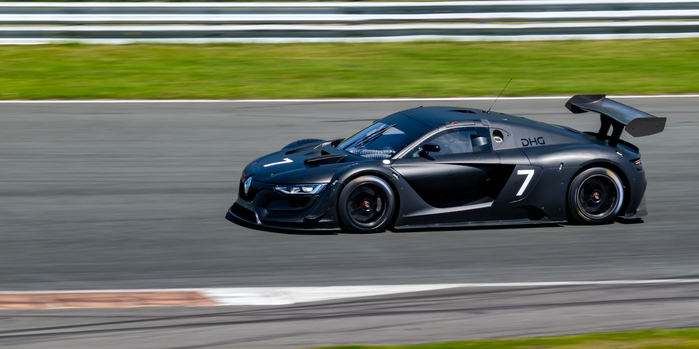
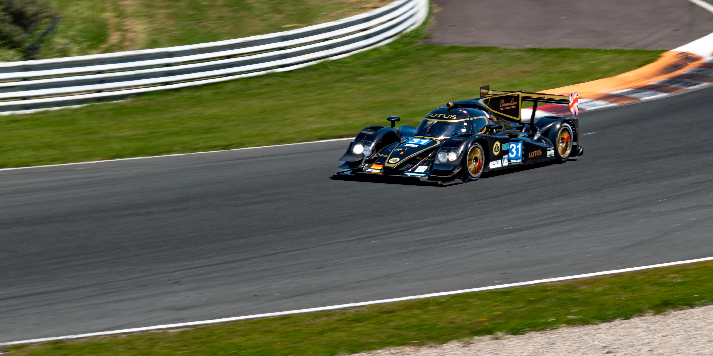
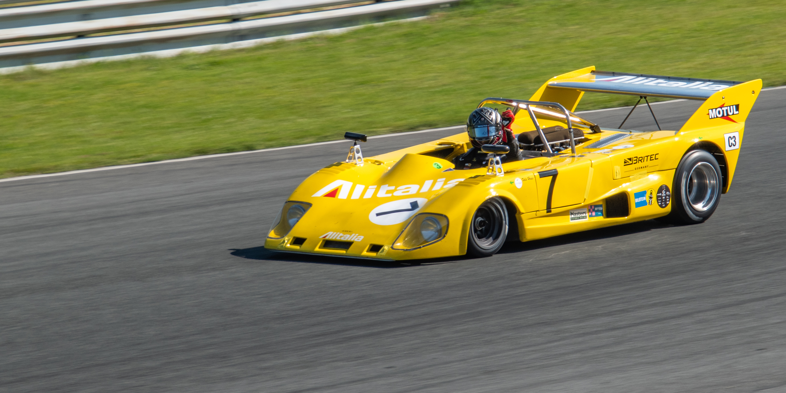
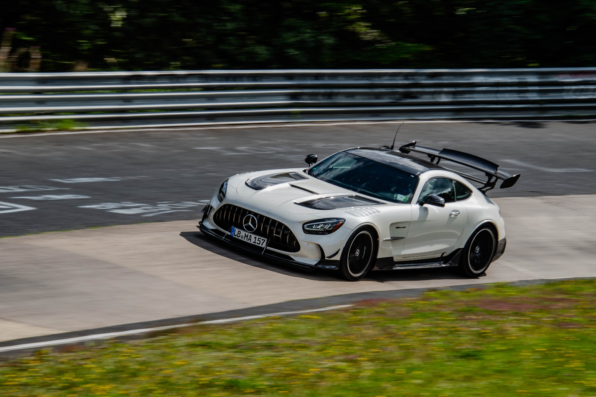
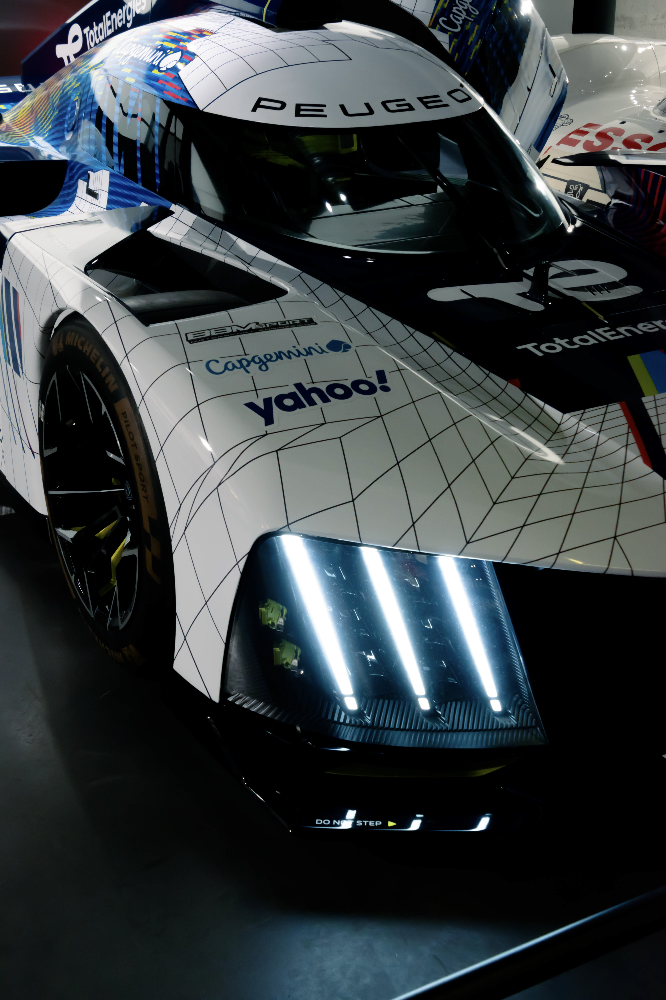
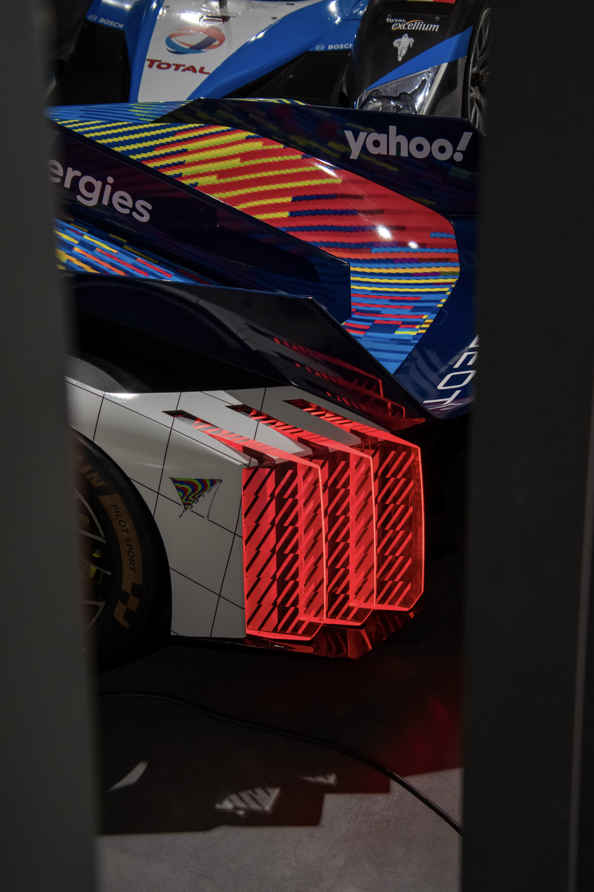
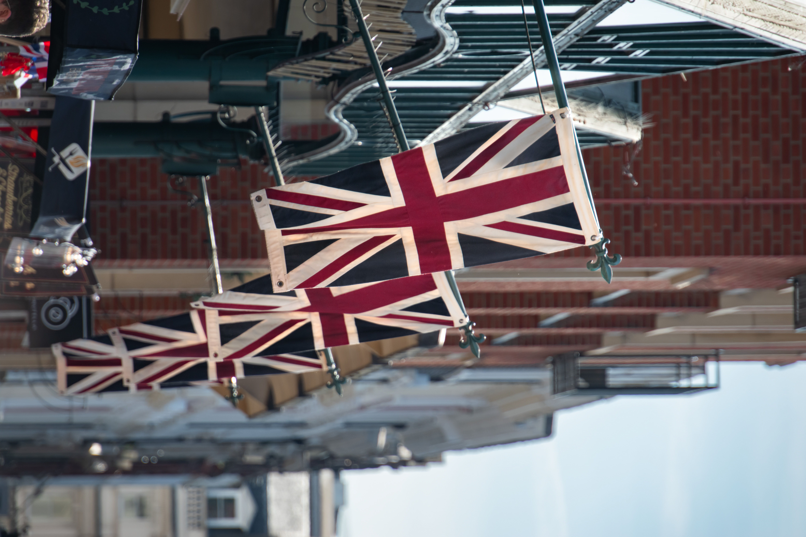
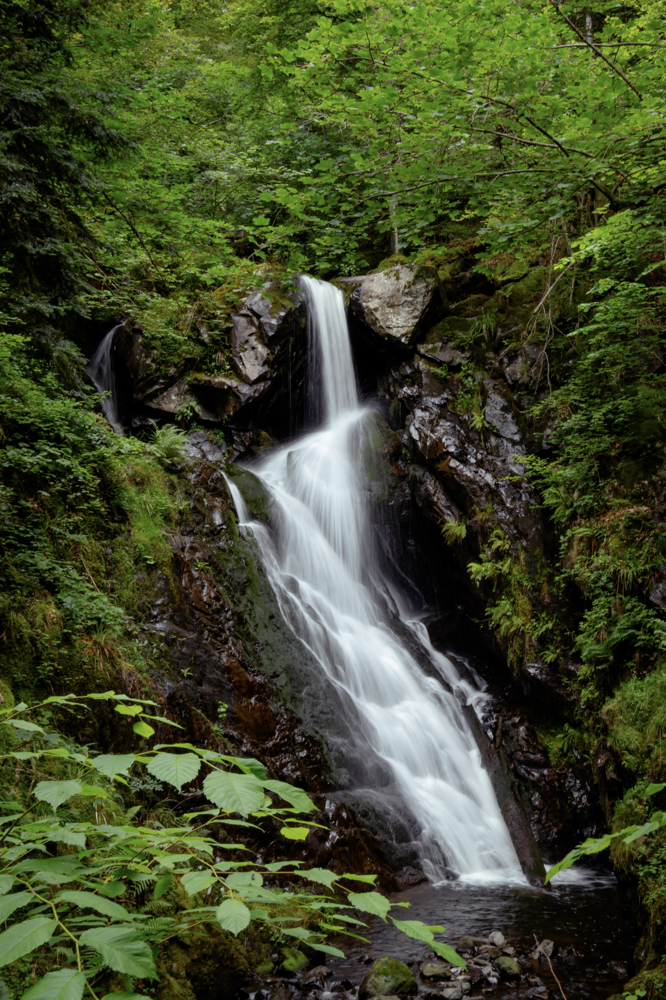

Work in progress, there will be things missing!.
Hi there! I am Jelmer, 18 years old, and im doing a lot of photography and ICT
I take photos in cities, but also of races and airplanes.
I am also familiar with software like Blender, Photoshop, Davinci Resolve and lightroom (classic)
Additionally I am going to Ireland to take photos for a client at a racetrack.
If you want to contact me, send me an email on Jelmer.kist44@gmail.com











